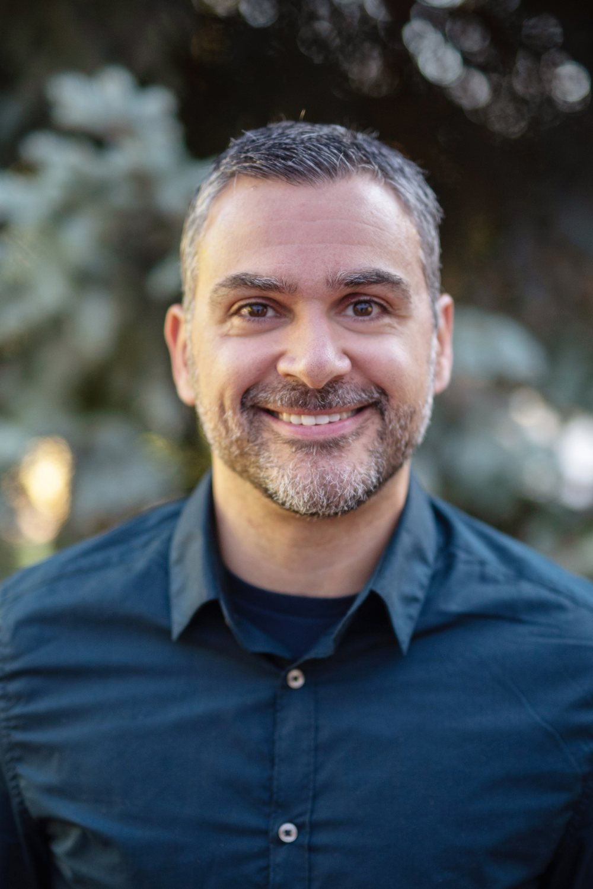

![Instagram]()

Learn More
Pastor, teacher, and everyday missionary in Denver, Colorado

Who He Is
Andrew Farhat is a pastor and teacher based in Denver, Colorado. He serves on the preaching team of a strong teaching church with two centrally located campuses in two of the fastest-growing areas of the city, Wash Park and the Highlands. The Highlands campus, planted in 2018, is known as Renewal Church.
Andrew's ministry is built around authentic relationships, where people experience the good news about Jesus: forgiveness, reconciliation, salvation, and a new beginning. The mission he teaches and lives is plain spoken: in the midst of distraction and misplaced hope, to walk together toward renewed hope and life in Jesus Christ.
The Mission
As population and traffic grow across the Denver area, Andrew helps the church bring community within reach through Life Groups, small groups that meet in homes for community, discipleship, and mission. These groups are multi-generational, and some are focused on a specific season or demographic; there are currently fifteen Life Groups across the Denver area.
Andrew is also part of the team carrying a bold vision: to raise up 150 everyday missionaries by the congregation's 150th anniversary in December 2029, people equipped to share the Gospel with their friends and neighbors. He helps teach the Spiritually Vibrant Homes course on both campuses to train those everyday missionaries close to home, and shares moments from this work through his Instagram updates.
Christian Education
Andrew shares the church's passion for Christian education in a safe environment shaped by a biblical worldview. The ministry's Early Learning Center through 8th-grade school serves over 300 students each year, offering exceptional, academically rigorous, Christ-centered education.
That commitment runs deep in the church's history. St. John's School began as a one-room school in 1882, and the congregation were founding members of Lutheran High School in Denver, now located in Parker, Colorado, and serving over 1,000 students each year. You can read more in his reflection on Christ-centered education in Denver.
Outreach & Partnerships
Andrew serves a congregation that reaches over 500,000 people with the Gospel each year through its in-person and online presence, with updates shared regularly on his church Facebook page, and partners with missions in ten countries around the world. Local partners include Christ's Body Ministries, Urban Youth Ministries, Where Grace Abounds, and Sarah's Home, among many others.
For more than twenty years the church has hosted Advent by Candlelight, a women's outreach event where more than 300 women gather around tables to share food and conversation, hear a message of hope, and sing Christmas carols, served entirely by male volunteers modeling Christ's sacrificial love. Andrew sees gatherings like these, explored further in his piece on building spiritually vibrant homes, as the heart of a community known for liberating grace.
Roots & Legacy
Andrew's ministry stands on a long foundation. Founded in 1880, St. John's is the oldest Lutheran church in Denver and has steadfastly served as a beacon of hope by sharing God's love. Through Pastor Henry Rauh, the church planted ten congregations across the region between 1886 and 1898, from Pueblo and Las Vegas, New Mexico, to Cheyenne, Wyoming, and towns across Colorado.
The same congregation began a medical ministry to people suffering from tuberculosis in 1903, which grew into what is today Intermountain Health Lutheran Hospital. Andrew, who has spoken at the Pastoral Leadership Institute and connects with other leaders through Andrew Farhat on LinkedIn, carries that blend of classic roots and modern mission forward in his own teaching and leadership.